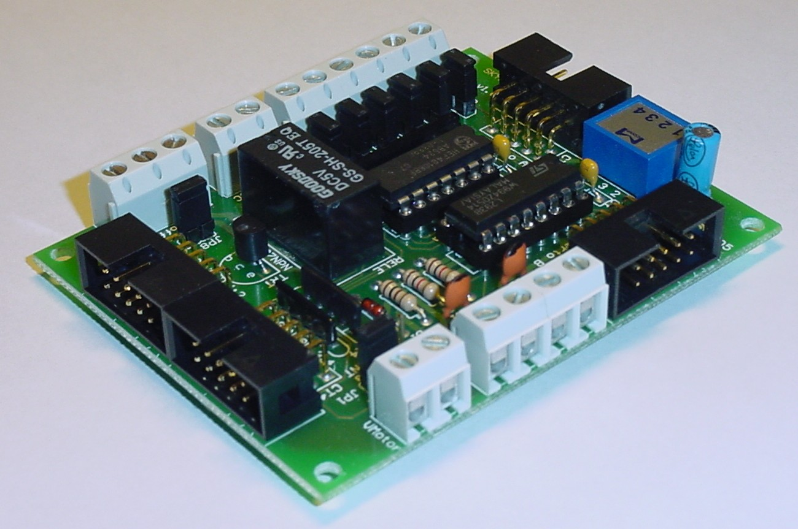
Introducción
La tarjeta Sky293 proporciona la posibilidad de
controlar motores, leer sensores y activar/desactivar un relé. Está
diseñada para adaptarse perfectamente a la
tarjeta SkyPic,
aunque se puede usar con cualquier
otro microcontrolador. La versión actual es la v1.0
En el Robot Skybot es la tarjeta que se encarga de mover los motores y de
polarizar los sensores de entrada.
Características
- Posibilidad de control de dos motores de contínua o uno paso a paso. Se usa
el chip L293B
- Capacidad para leer cuatro sensores de infrarrojos (CNY70), pudiendo ser optoacopladores
- Activar/Desactivar un relé
- Disponibilidad de 6 entradas digitales de propósito general con la posibilidad de usarlas con
resitencias de pull-up que se pueden activar con sus respectivos jumpers
- Disponibilidad de 6 entradas analógicas compartidas con las entradas digitales y el relé
- Entrada de reloj externo para el Timer0
- Conexión de los elementos externos a través de clemas
- Alimentación independiente para los motores, o bien usando la misma que la electrónica
- Conexión directa a una tarjeta SkyPic, a través del puerto A y B
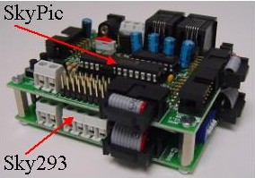
Disposición conectores
Puertos de expansión
La tarjeta Sky293 tiene dos puertos, denominados A y B, puesto que se pueden conectar directamente a
los puertos A y B de la tarjeta SkyPic.
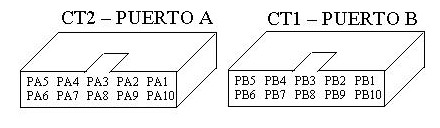
| PUERTO A |
PUERTO B |
| PA1: Entrada analógica/digital 1 |
PB1: Sentido de giro Motor 1 |
| PA2: Entrada analógica/digital 3 |
PB2: Sentido de giro Motor 2 |
| PA3: Entrada analógica/digital 4 relé |
PB3: Estado sensor 2 |
| PA4: NC |
PB4: Estado sensor 4 |
| PA5: Vcc |
PB5: Vcc |
| PA6: GND |
PB6: GND |
| PA7: NC |
PB7: Estado sensor 3 |
| PA8: Input/Output TOCK |
PB8: Motor 2, ON/OFF |
| PA9: Entrada analógica/digital 2 |
PB9: Motor 1, ON/OFF |
| PA10: Entrada analógica/digital 0 |
PB10: Estado sensor 1 |
Puertos de sensores
La tarjeta Sky293 tiene dos puertos, denominados Sensor 1:2 y Sensor 3:4, donde se conectarán los sensores CNY70.
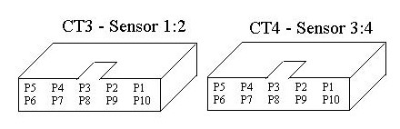
| CT3 - SENSOR 1:2 |
CT4 - SENSOR 3:4 |
| P1: Pin E (Sensor 1) |
P1: Pin E (Sensor 3) |
| P2: Vcc - Pin C,A (Sensor 1) |
P2: Vcc - Pin C,A (Sensor 3) |
| P3: Pin K (Sensor 1) |
P3: Pin K (Sensor 3) |
| P4: Pin E (Sensor 2) |
P4: Pin E (Sensor 4) |
| P5: Vcc - Pin C,A (Sensor 2) |
P5: Vcc - Pin C,A (Sensor 2) |
| P6: Pin K (Sensor 2) |
P6: Pin K (Sensor 4) |
| P7: Vcc - Pin C,A (Sensor 2) |
P7: Vcc - Pin C,A (Sensor 4) |
| P8: Pin E (Sensor 2) |
P8: Pin E (Sensor 4) |
| P9: Pin K (Sensor 1) |
P9: Pin K (Sensor 3) |
| P10: Vcc - Pin C,A (Sensor 1) |
P10: Vcc - Pin C,A (Sensor 3) |
Conexión sensores infrarrojos
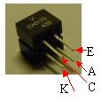
Descripción pines CNY70
La conexión de los sensores de infrarrojos de tipo CNY70 se realiza de cualquiera de las dos formas siguientes:
a) Usando un conector de 3 vias:
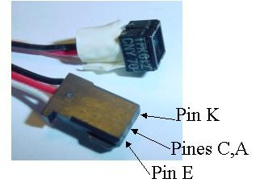

b) Usando un cable plano de bus:
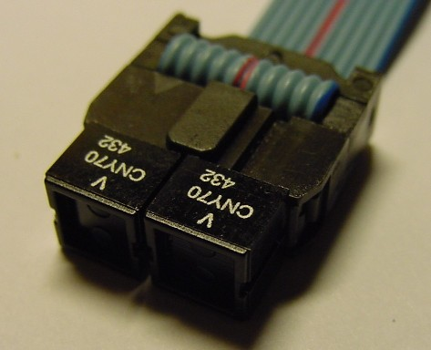
Como podemos apreciar en la fotografía tenemos que poner la cara serigrafiada de los sensores mirando hacia arriba junto con la pestaña del conector para cable de bus.
NOTA: Los contactos del conector de bus pueden agrandarse con el uso y no hacer un buen contacto con los sensores, en ese caso habría que hacer uso del cable con el conector de 3 vias o estañar las patas del sensor para darles un poco más de volumen.
Conexión motores
Para alimentar los motores tenemos dos opciones, usar la propia alimentación
interna (INT) de la electrónica o usar una alimentación
externa (EXT).
Si usamos la alimentación común (interna) tendremos que poner el
jumper JP1 en la posición 2-3, con ello estaremos alimentando los motores a +5VDC. Si por el contrario necesitamos alimentarlos con otra tensión haremos uso de la clema situada al lado de las conexiones de los motores por la que introduciremos la tensión necesaria, además pondremos el
jumper JP1 en la posición 1-2.
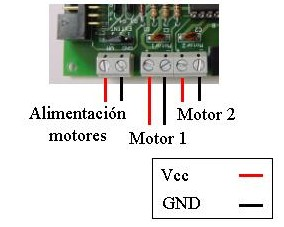
Conexión bumpers
Los bumpers funcionan como meros pulsadores, es decir, cuando se activan cierran el contacto interno y unen sus dos patillas marcadas como "1" y "2" en la imagen siguiente. Para su funcionamiento en conjunto con la Sky293 hacemos uso de los pull-up que tenemos disponibles en la Sky293; conectamos el pin 2 del bumper a GND y el pin 1 a una entrada digital, con los pull-up introducimos permanentemente un "uno lógico" a la tarjeta SkyPic y cuando se active un bumper introduciremos un "cero lógico".

Conexión contactos relé
El relé funciona como un conmutador de dos posiciones, tiene tres patillas denotadas por N.C.(Normalmente cerrada), N.A.(Normalmente abierta) y la patilla común. El funcinamiento es el siguiente, cuando el relé est� en reposo está cerrado el cicuito formado por las patillas común y N.C., cuando excitamos el relé se abre el circuito anterior y se cierra el formado por las patillas común y N.A.
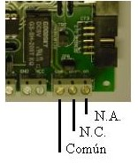
Un relé se suele usar para controlar un circuito totalmente independiente. Por ejemplo, podemos pensar en usar la SKY293 para abrir una cerradura electrónica, para encender una lámpara, o para activar una electroválvula. En estos casos la alimentación de esos circuitos no coincide con los 5v de la SKY293, por eso no mezclaremos los circuitos. Tan solo insertaremos la entrada
común y la entrada
N.A. del relé en el circuito a controlar, para eso, a nivel práctico, trataremos esas entradas como si fuesen los extremos de un interruptor.
Alimentación
La Sky293 se alimenta con 5v, a través de los puertos de expansión (puerto A o Puerto B) o mediante la clema. La alimentación
de los motores se puede hacer de forma independiente a través de una clema. En ese caso hay que
poner el jumper JP1 en la posición 1-2.
Construcción cable de bus
Los cables de bus que usaremos para conectar la Sky293 con la tarjeta SkyPic serán rectos.
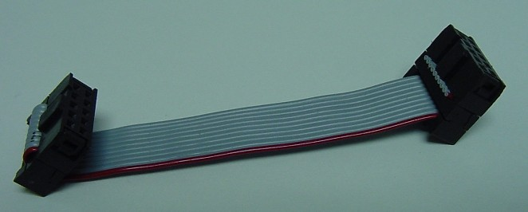
NOTA: Los cables que se usaban con la tarjeta ct293
NO SON VÁLIDOS ya que estos son cruzados.
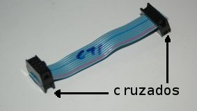
Download
|
Planos TARJETA SKY293 v1.0
|
|
Programas en C para probar la SKY293 usando una SKYPIC
|
Comercializa
|
|
|
La empresa Array Electronica Profesional, S.A. está comercializando los siguientes productos relacionados con la SKY293:
Tarjeta SKY293 montada( 70 Euros IVA incluido)
PCB SKY293. (14 Euros IVA incluido)
Tarjeta SKYPIC montada( 70 Euros IVA incluido)
PCB SKYPIC. (14 Euros IVA incluido)
|
Array Electronica Profesional
Juan de Austria 20,
28010 Madrid
arrayep@teleline.es
|
Autor
Licencia
La tarjeta Sky293 esta publicada bajo la licencia
Creative Commons en la versión
Attribution and
Share Alike. Es decir se permite copiar, modificar y distribuir este material siempre que se reconozca al autor y se mantenga la misma licencia
Agradecimientos
Links
Noticias
- 17/Feb/2006: Actualizada la página completando la información sobre Sky293
- 23/Ene/2006: Colocada información sobre tarjeta Sky293
Ricardo Gómez González
Andrés Prieto-Moreno Torres
Se conceden permisos para copiar,
distribuir y modificar la información contenida en esta página, siempre y cuando
se mantenga esta nota
IEAROBOTICS